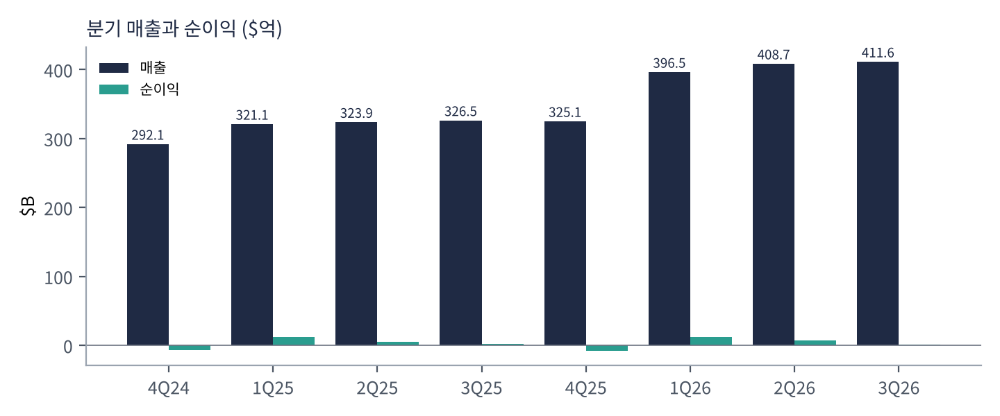
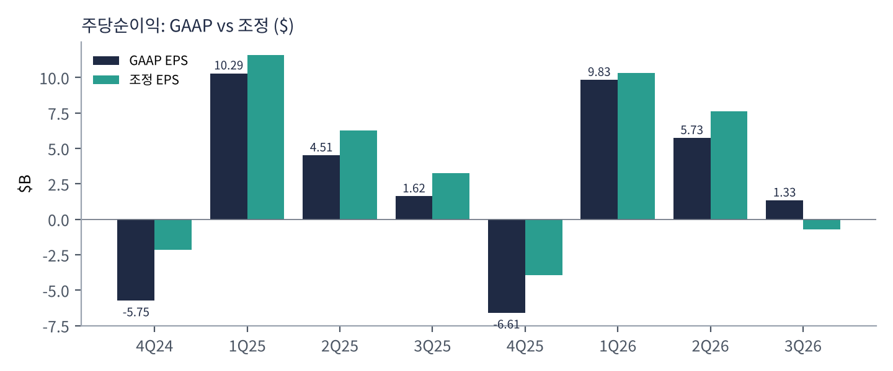
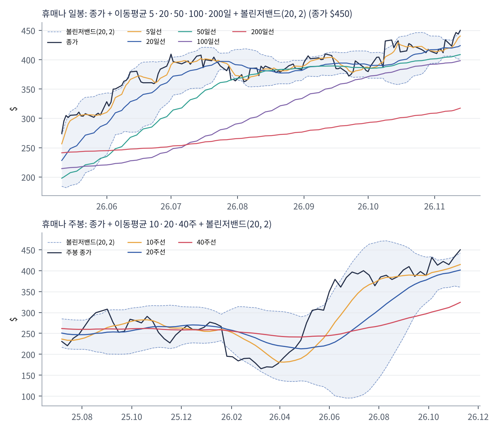
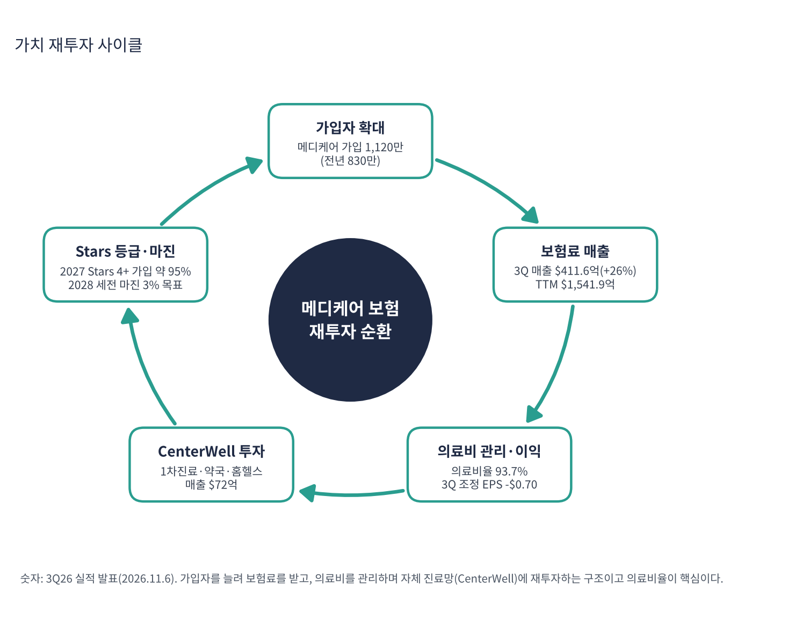

휴매나는 메디케어 어드밴티지 보험과 CenterWell(1차진료·약국·홈헬스)을 운영하는 미국 건강보험 회사다. 3분기 매출이 +26% 늘고 연간 가이던스를 올렸지만, 조정 EPS가 3분기 -$0.70이고 의료비율이 높은 회사다. 주가는 $450.0다.
| 항목 | 내용 |
|---|---|
| 종목 | Humana (HUM) · NYSE · 헬스케어(건강보험) · 켄터키 루이빌 |
| 멀티플 | PER 43.8배 · PEG 산출 불가 · P/S 0.35배 (11/13 종가 $450.0) |
| 최근 분기(3Q26) | 매출 $411.6억(+26%), GAAP EPS $1.33(평가이익 $2.94 포함), 조정 EPS -$0.70 |
| 가이던스(2026) | 조정 EPS $9.50 이상(기존 $9.00 이상), GAAP EPS $15.09 이상, 의료비율 약 94% |
| 현금·부채 | 스캐너: 총차입금 $125.0억, TTM 잉여현금 $31.4억(현금은 스캐너에 없음) |
| 직책 | 인물 | 역할·특징 |
|---|---|---|
| CEO | 짐 렉틴(Jim Rechtin) | 메디케어 가입 확대와 Stars 등급 회복을 이끎 |
| CFO | 셀레스테 멜렛(Celeste Mellet) | 연간 조정 EPS 가이던스 상향($9.50 이상)을 발표 |
경영 스타일: '가입자와 Stars 등급을 키우고 자체 진료망으로 의료비를 관리한다'. 2028년 세전 마진 3% 이상을 목표로 두고 CenterWell 1차진료 환자를 30% 늘렸다. 3Q에는 전년 대비 사전 준비금 유리분이 $0.67억으로 작아졌다($2.75억에서).
CenterWell 매출 $72억(전년 $59억), 1차진료 환자 +30%, 메디케이드 +10.4만 명(연초 이후).
2027 Stars 4+ 가입 약 95%, 2028년에 일회성 효과가 나타날 것으로 설명한다.
다음 실적발표(4Q26)는 세 가지 질문에 답하는 자리다.
질문 1. 4Q 조정 손실이 연간 가이던스가 암시하는 범위 안인가?
| 확인할 숫자 | 좋아지면 | 나빠지면 |
|---|---|---|
| 연간 조정 EPS 가이던스 $9.50 이상, 9개월 누적 $17.22(10.31+7.61-0.70) → 4Q 암시값은 약 -$7.7(내 계산), 전년 4Q -$3.96 | 범위 안이면 ③의료비 관리 고리가 유지된다 | 범위보다 크면 의료비 증가가 가이던스보다 크다는 뜻이다 |
질문 2. 2027 가입자와 의료비율이 안정되는가?
| 확인할 숫자 | 좋아지면 | 나빠지면 |
|---|---|---|
| 3Q 의료비율 93.7%(가이던스 약 94%), 2027 가입 추이 앞섬, 이탈 약 60만 명 중 약 40% 재가입(회사), 2027 의료비 추세는 더 어렵다고 설명 | 안정되면 ①가입자 고리가 이익으로 이어진다 | 의료비율이 오르면 가입 증가가 손실을 키운다 |
질문 3. Stars 등급 효과와 2028 마진 목표가 확인되는가?
| 확인할 숫자 | 좋아지면 | 나빠지면 |
|---|---|---|
| 2027 Stars 평균 4.17, 4개 이상 별 가입자 약 95%, 2028년 일회성 보너스 효과 예상, 2028 세전 마진 3% 이상 목표(회사), Stars 방법론 소송 두 번 패소 | 재확인되면 ⑤Stars·마진 고리가 힘을 얻는다 | 목표가 낮아지면 2028 이익 회복 근거가 약해진다 |
한 줄 판정 규칙: 첫 질문이 가이던스 안이고 의료비율이 안정되면 약한 고리(의료비·Stars)가 완화되고, 의료비율이 오르면 사이클의 이익 고리가 약해진다.
일정: 2027-02-10 예정으로 입력했으나 트레이딩뷰·회사 확정 일정은 확인 필요(통상 1월 말~2월 초). 2027 연간 가이던스는 4Q 발표와 함께 나온다.
| 분기 | 매출 | 순이익 | EPS | 조정 EPS | 특이 사항 |
|---|---|---|---|---|---|
| 4Q24 | $292.1억 | $-6.9억 | -5.75 | -2.16 | |
| 1Q25 | $321.1억 | $12.4억 | 10.29 | 11.58 | |
| 2Q25 | $323.9억 | $5.5억 | 4.51 | 6.27 | |
| 3Q25 | $326.5억 | $1.9억 | 1.62 | 3.24 | |
| 4Q25 | $325.1억 | $-8.0억 | -6.61 | -3.96 | |
| 1Q26 | $396.5억 | $11.9억 | 9.83 | 10.31 | |
| 2Q26 | $408.7억 | $6.9억 | 5.73 | 7.61 | |
| 3Q26 | $411.6억 | $1.6억 | 1.33 | -0.70 | 3Q26 GAAP EPS에 평가이익 $2.94 포함 |


값은 트레이딩뷰 스캐너 분기 이력이다. 조정 EPS는 트레이딩뷰 Reported(회사 조정 EPS)다. 4분기는 의료비가 몰려 손실이 나는 계절성이 있다(4Q24 -$2.16, 4Q25 -$3.96). 3Q26 GAAP EPS $1.33에는 CenterWell 소수지분 평가이익 주당 $2.94가 들어 있다(회사 발표). 분기 설비투자는 구하지 못했다.
흐름 요약: 매출은 4Q24 $292.1억에서 3Q26 $411.6억으로 늘었다(메디케어 가입 확대). 반면 조정 EPS는 3Q25 $3.24에서 3Q26 -$0.70으로 줄어 가입 증가가 이익으로 이어지지 않았다.
| 항목 | 값 | 비고 |
|---|---|---|
| 3Q 매출 | $411.6억 | 전년 $326.5억(+26%) |
| 메디케어 가입자 | 1,120만 명 | 전년 830만 명(+35%, 내 계산) |
| 전체 의료 가입자 | 1,800만 명 | 메디케어·메디케이드·상업 보험 합계 |
| 3Q CenterWell 매출 | $72억 | 전년 $59억(+22%, 내 계산) |
| 3Q 의료비율 | 93.7% | 가이던스 약 94% 이상, 운영비율 11.2% |
성장은 메디케어 가입자 확대(약 290만 명)에서 나온다. 가입이 늘면서 의료비 부담도 커져 이익은 줄었다. 보험·CenterWell 분리 영업이익 표는 이번에 구하지 못했다.
휴매나는 '메디케어 가입자를 키우고 진료망(CenterWell)과 Stars 등급으로 의료비를 관리하며 마진을 회복하는 것'을 목표로 한다.
| 축 | 최근 움직임 |
|---|---|
| 가입 | 메디케어 1,120만 명, 2027 가입 추이가 계획보다 앞섬 |
| 마진 | 2028 세전 마진 3% 이상 목표, 2026 의료비율 약 94% |
| 진료망 | CenterWell 1차진료 환자 +30%, 메디케이드 확대 |

| 이동평균 | 값 | 종가 대비 | 해석 |
|---|---|---|---|
| 5일선 | $440.25 | +2.2% | 현재가가 위 |
| 20일선 | $423.97 | +6.1% | 현재가가 위 |
| 50일선 | $408.68 | +10.1% | 현재가가 위 |
| 100일선 | $398.26 | +13.0% | 현재가가 위 |
| 200일선 | $317.35 | +41.8% | 현재가가 위 (+42%) |
주봉 흐름: 52주 고점 $456.50(10/9), 52주 저점 $163.11(3/20). 현재가 $450.00는 200일선 $317.35보다 위, 50일선 $408.68보다 위에 있다.
| 규칙 | 기준 | 현재 값 | 신호 |
|---|---|---|---|
| 장기 추세 필터 | 종가 vs 200일선 | $450.00 > $317.35 | 매수 |
| 중장기 교차 | 50일선 vs 200일선 | $408.68 > $317.35 | 매수 |
| 단기 교차 | 20일선 vs 50일선 | $423.97 > $408.68 | 매수 |
| 돈키언 채널 | 55일 고가 $456.50 / 저가 $369.13 | 중간값 $412.81 위 | 매수 |
| 1개월 모멘텀 | 21거래일 수익률 | +4.1% (기준 $432.20) | 매수 |
| 3개월 모멘텀 | 63거래일 수익률 | +17.1% (기준 $384.31) | 매수 |
| 6개월 모멘텀 | 126거래일 수익률 | +47.5% (기준 $305.12) | 매수 |
| 12개월 모멘텀 | 252거래일 수익률 | +87.1% (기준 $240.48) | 매수 |
| 종합 (8개 평균) | +1.00 | 강한 매수 |
해석: 8개 신호 중 매수 8개, 매도 0개(점수 +1.00, 강한 매수)다. 14일 ATR $17.39 (3.9%).
| 가격·조건 | 무엇이 바뀌나 | 의미 |
|---|---|---|
| $317.35 돌파 | 200일선 | 이탈하면 매수 → 매도 |
| 50일선이 200일선 위로 | 50/200 교차 | 이탈하면 매수 → 매도 |
| 20일선이 50일선 위로 | 20/50 교차 | 이탈하면 매수 → 매도 |
| 구분 | 가격대 | 근거 |
|---|---|---|
| 저항 1 | $456.50 | 55일 고점 |
| 저항 2 | $456.50 | 52주 고점 |
| 지지 1 | $440.25 | 5일선 |
| 지지 2 | $423.97 | 20일선 |
점수는 +1.00(강한 매수)다. 14일 ATR은 $17.39로 현재가의 3.9%다. 가까운 저항 $456.50을 종가로 넘는지와 가까운 지지 $440.25를 지키는지가 신호 전환의 기준이다. (내 가정, 매매 권유 아님)
| 악재 요인 | 내용 | 강도 |
|---|---|---|
| 의료비율 상승 | 3Q 의료비율 93.7%, 2027 의료비 추세는 더 어렵다고 설명 | 높음 |
| Stars·정책 | Stars 방법론 소송 두 번 패소, 메디케어 지급액 격차 | 높음 |
| 가입 이탈 | 2027 이탈 약 60만 명(재가입 약 40%) | 중간 |
| 이익 변동 | 4분기 손실 계절성, 준비금 유리분 감소($0.67억 vs $2.75억) | 중간 |
| GAAP 착시 | 3Q GAAP EPS에 평가이익 주당 $2.94 포함 | 중간 |
| 티커 | 회사 | PER(TTM) | PEG | P/S | EPS 성장(YoY) |
|---|---|---|---|---|---|
| HUM | 휴매나 | 43.8배 | – | 0.35배 | -4% |
| UNH | 유나이티드헬스 | 23.2배 | – | 0.81배 | -9% |
| ELV | 엘레번스 헬스 | 18.3배 | – | 0.46배 | -4% |
| CVS | CVS 헬스 | 10.4배 | – | 0.28배 | +2148% |
| CI | 시그나 | 13.1배 | – | 0.27배 | +0% |
| CNC | 센틴 | 24.4배 | – | 0.17배 | – |
HUM 첫 행은 스캐너 값이다. EPS가 감소해 PEG는 산출되지 않는다. CVS의 EPS 성장 +2,148%는 전년 적자 기저 효과이고 CNC는 성장률이 제공되지 않는다.
휴매나는 총차입금이 $125.0억이고 TTM 잉여현금이 $31.4억이다. TTM 순이익이 $12.5억(매출 대비 약 0.8%)으로 낮아 잉여현금이 순이익의 약 2.5배다(내 계산). 스캐너에 현금 값이 없어 순차입은 계산하지 못했다.
| 지표 | 값 | 계산·출처 | 해석 |
|---|---|---|---|
| 총차입금 | $125.0억 | 스캐너 | 현금 값 없음, 순차입 산출 불가 |
| TTM 잉여현금흐름 | $31.4억 | 스캐너 | TTM 매출 $1,541.9억 대비 약 2.0%(내 계산) |
| TTM 설비투자 | $5.9억 | 스캐너 | 매출 대비 약 0.4%(내 계산) |
| TTM 영업이익률 | 1.5% | 스캐너 | 마진이 낮아 의료비율 1%p가 이익을 크게 흔듦 |
| 기준 | 값 | 비고 |
|---|---|---|
| P/S (TTM) | 0.35배 | 스캐너 |
| 동종 | UNH 0.81, ELV 0.46, CVS 0.28, CI 0.27, CNC 0.17 | 11/13 스캐너 |
해석: P/S 0.35배는 UNH(0.81배)보다 낮고 ELV(0.46배)와 비슷하다. 낮은 영업이익률(1.5%) 때문에 매출 대비 가격이 낮게 형성된 것으로 보인다(내 해석).
| 지표 | 값 | 판정 |
|---|---|---|
| PER (GAAP TTM) | 43.8배 | 스캐너, TTM EPS $10.27(평가이익 포함) |
| PER (조정 TTM) | 약 33.9배 | $450.0 ÷ 최근 4분기 조정 EPS $13.26(내 계산) |
| TTM 영업이익률 | 1.5% | 스캐너 |
| TTM 순이익률 | 약 0.8% | $12.5억 ÷ $1,541.9억(내 계산) |
| 방식 | PER | EPS 성장률 | PEG | 판정 |
|---|---|---|---|---|
| 트레이딩뷰 (GAAP TTM) | 43.8배 | -3.7% | 산출 불가 | GAAP EPS 감소 |
| 조정 EPS (내 계산) | 약 33.9배 | 약 -30% | 산출 불가 | 최근 4분기 $13.26 ÷ 직전 4분기 $18.93 |
판정: GAAP·조정 EPS가 모두 줄어 PEG를 산출할 수 없다. PEG 투자 적격(≤1.0) 판정 대상이 아니다.2026 연간 조정 EPS 가이던스 $9.50 이상은 2025년 $17.14보다 약 45% 낮다(내 계산). 이익 회복은 2028 Stars 효과와 의료비 관리에 달려 있다(내 해석).

휴매나의 사이클은 가입자 확대 → 보험료 매출 → 의료비 관리·이익 → CenterWell 투자 → Stars 등급·마진이다. 규모를 키운 뒤 의료비를 낮춰 이익으로 연결한다.
| 고리 | 현재 숫자 | 고리 강도 | 약해지는 신호 |
|---|---|---|---|
| ① 가입자 확대 | 메디케어 1,120만 명(+290만) | 강함 | 2027 이탈 약 60만 명 |
| ② 보험료 매출 | 3Q 매출 $411.6억(+26%) | 강함 | 매출 증가가 이익으로 연결되지 않음 |
| ③ 의료비·이익 | 의료비율 93.7%, 3Q 조정 EPS -$0.70 | 약함 | 준비금 유리분 $0.67억(전년 $2.75억) |
| ④ CenterWell 투자 | CenterWell 매출 $72억, 환자 +30% | 보통 | 수익 기여가 아직 작음 |
| ⑤ Stars 등급·마진 | 2027 Stars 4+ 가입 약 95%, 2028 목표 | 보통 | Stars 소송 두 번 패소, 메디케어 지급 격차 |
구조: 가장 약한 곳은 ③이다. 매출이 26% 늘었지만 조정 EPS가 3Q -$0.70이고, 4Q 암시값이 약 -$7.7(내 계산)이라 의료비율이 가이던스 안에 머무는지가 확인돼야 사이클이 닫힌다.